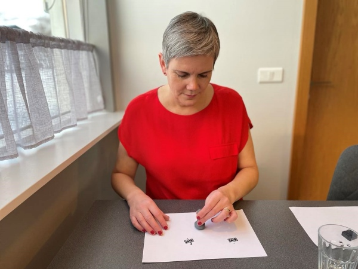
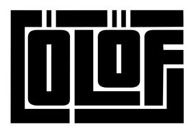

Computer aided design
Designing a stamp handle in FreeCad

Tutorial
I followed Svavar's directions on how to draw the handle. The directions can be found here.
I made the drawing on the XZ-plane. I began by drawing all straight lines and using constraints to set the length, hight, width, radius and the incline degrees. Then I made the arching lines and made sure that the nodes were connected. To soften the parts where a straight line meets an arch I made the arch tangent to the line. I created a guiding line at the top and made the arch tangent with it. To create a guiding line (construction geometry) you can click on this icon. Read about it here.
The final sketch for the handle
This is the final sketch:
The stamp handle drawn in 3D:
At last I chose the Revolve in Part workbench to revolve the drawing around the Y-axis to make a 3D model. Read more about revolving here. After revolving and saving the file I exported it as an 3D Manufacturing format (*.3mf). Finally I prepaired the model for 3D printing in Bambu slicer and 3D printed it in Bambu X1 Carbon.

Designing a logo
Designing a logo in Inkscape
This tutorial shows how you can make logos with custom text treatment in Inkscape.
I decided to use my first name when designing my logo. At first I used my name without the Icelandic letters, Olof instead of Ólöf. I clicked on the text icon in Inkscape and chose a font. By holding CTRL and SHIFT I could scale the size and still keep the same proportions. Then I converted the text to path by choosing Path and then Object to path. After that I clicked on Object and Ungroup.
I clicked on Object and Fill and stroke. There I changed the Opacity from 100 to 50. That way the letters were a little bit transparent and I could see them all when they overlapped each other. By holding CTRL while moving a letter, the letter was locked on the horizontal axis when moving them around. Then I could select more than one letter by holding SHIFT while clicking on all letters I wanted to select when moving multiple letters at the same time.
By selecting one letter and clicking on CTRL and D I duplicated the letter. Then I changed the color of the letter by clicking on a color in the color palette at the bottom of the screen. I went to Path and Path effects. Then I clicked on the arrow to the right on the screen, below the Path effects text and chose Offset. Then I could use the plus symbol to increase the offset until I was happy with the size. After that I held the Shift button and clicked on the letter beside it. Then I chose Path and Difference. This is the outcome:

I wasn't really happy with the outcome, so I kept on trying different ways. I used the Impact font and arranged my name in a rectangle.
Then I added a pink rectangle to the logo.
I used the Typographica font that I found on the website DaFont.com, resized some letters and arranged them in a fun way to make this logo:
Inline blocks
This looks like an emoji! I think it would be fun to learn how to use Blender to change this logo to an emoji. I could call it Baffled face, expressing the feeling that can come over people when learning something new in Fab Academy.

Then I tested how it would look with the ComicSans font:

The final design
I found the Pricedown font on DaFont.com, stretched some lines and created an outline.


I made two versions of the final logo, with and without the Icelandic letters.

Problems with settings for logo and favicon
I ran into some problems when I tried to use the logo on the website. The logo didn't appear when I followed what Svavar had done. Then I tried to follow the instructions on this site, but it didn't work either. I checked if there was any difference in using .jpg, .png or .svg and I also checked if they would work in the image folder or just under docs in the repository. When none of this worked, I asked Þórarinn Bjartur Breiðfjörð. After looking into what I had done he suggested that I would not write the folder name before the name of the file and it worked. I do not know why this worked better, but I was glad that it did.
Logo and favicon made clearer
The logo and favicon were not as clear as I wanted. When I had many tabs open on my browser the favicon was just a black blob. When I changed it to pink it was easier to find it. I also decided to change the logo and make all white spaces between letters and lines bigger.

The stamp
I created another file in Inkscape for rasterizing and cutting the stamp rubber. I coloured the logo pink. Then I used Path and Union to union all the elements in the logo. I found that it did't always work when I chose more than two elements at a time so I only worked with two elements each time. Then I drew a cirkle with 30mm diameter. I copied it and pasted to make another cirkle. I clicked on the other cirkle, chose Object and Fill and stroke. There I turned off the fill, turned on the line and made it red. Then I set the line to 0.02mm. In the other cirkle I turned on the fill and made it black.
When making a stamp you have to mirror texts and images, unless images are reflected on the Y-axis. I mirrored the letters and aligned them with the black, filled cirkle by clicking on Object and Align and distribute. Then I aligned them on both x- and y-axis. After that I clicked on Path and Difference to make the logo change to a negative space. Then I selected both the cutting line and the logo/filled cirkle, clicked on Object and Align and distribute and aligned them.
If I would have selected the filled cirkle with the logo as a negative space, clicked on Object and Fill and stroke, turned on the line, made it red and set the line to 0.02mm, the cutting lines would also be added to the lines/letters in the logo. That is the reason why I added the circle with the cutting line.
Rasterizing and cutting the rubber stamp
How to rasterize and cut rubber stamp
Svavar used this site as reference when making his stamp. I used it for reference when adjusting settings for the raster and vector. On the website it is recommended to go three seperate passes when rasterizing to get a good depth but after two passes I stopped and thought it would be enough. I should have done the third pass, as had been recommended, because the stamp smeared ink easily around the logo. Since it only took two passes to cut through the material but the rasterizing should have been done three times, it might be a good idea to make two seperate files, one for rasterizing and one for cutting.
Settings for rasterizing (using 600 dpi)
Speed: 45
Power: 100
Three passes should be adecuate.
Settings for cutting (using 600 dpi)
Speed: 18
Power: 100
Frequency: 600
Two passes should be adecuate.
Important
I could see many flares both when rasterizing and cutting, so it is important to be ready to act if fire breaks loose. This is always important when working with a laser and especially with materials that can easily catch fire.
I fastened the rubber to the handle by using double tape. It worked well and here you can see the stamp!